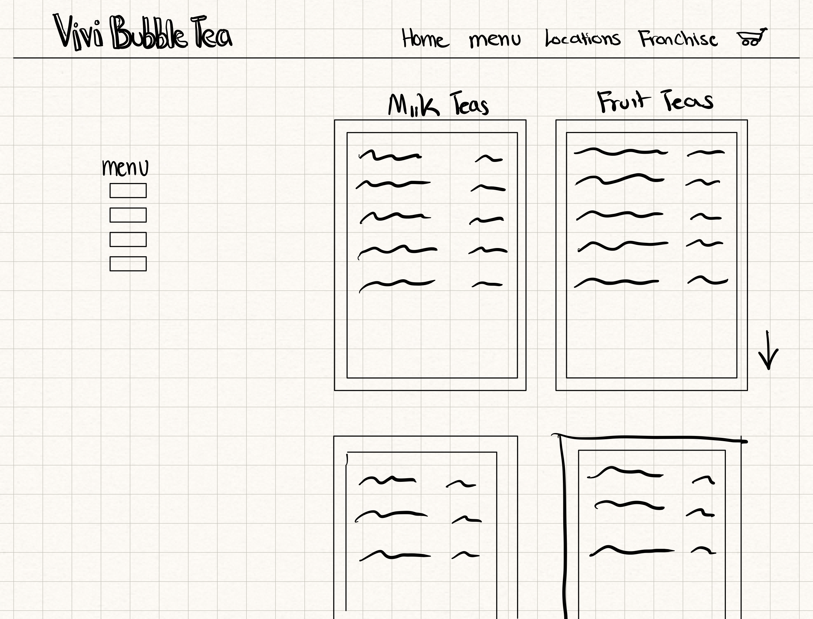

I have chosen to redesign Vivi Bubble Tea Menu Page due to its poor performance when using the voice reader, its issues with low-contrast text in the headings, lack of alt descriptions on the images, and the ratio of the size of the images to the headings . Vivi Bubble Tea Menu Page Link

When running WebAIM WAVE on the web page, several issues regarding low contrast colors, empty links, and missing alternative text on images appeared. The issues that were flagged down by WebAIM WAVE are consistent with some of the issues I noticed as the contrast between the headings and the background made it a bit difficult to read. Further, WAVE detected missing or null alternative text on all images which means that customers with accessibility needs may be left without context about the images. As a result, these customers may be unable to access information about the menu options. When tested with a screen reader, the images were completely skipped due to the lack of alt text.
In 9 minutes, I sketched 9 different possible redesigns of Vivi Bubble Tea Menu Page

Using my previous 9 speed sketches, I utilized some aspects of each design. to create a final sketch for my redesign
Using the final sketch as a guide for the redesign, I have created three lo-fi wireframes of this design for different devices: desktop, tablet, and smart phone.

To ensure consistency in my redesign of the Vivi Bubble Tea Menu page, I have created a Style Guide.
This style guide consists of the logos, fonts, colors, drop shadow information, headers, and label information that is to be used for redesigning the page,

Note: This mockup consists of multiple desktop frames to get the feel of a scrolling effect to better fit the contents onto the page.
Note: This mockup consists of multiple desktop frames to get the feel of a scrolling effect to better fit the contents onto the page.


Note: This mockup consists of multiple desktop frames to get the feel of a scrolling effect to better fit the contents onto the page.

While the hi-fi mockups have the same components and styling, some adjustments had to be made with font sizes and placement of sections to ensure that the screen was not crowded. Further, the style guide I developed allowed for a consistent styling of the redesign among all three mockups.
I have developed a redesigned page for Vivi Bubble Tea's menu to address the issues that I discussed previously. Using my Hi-Fi design and style guide, I created an html/css website to allow for improved learnability, memorability, and efficiency.
Through media queries, I ensured that my design is accessible through every device.I tested my website's efficiency and accessibility through WebAIM, screen readers, google translate, and different zoom levels
I ensured that the top-priority information is at the top of the page by implementing a scrolling menu. The photo gallery from the original design is placed at the bottom of the page. All these images contain alt labels for screen reader accessibility.
The page can be accessed at Vivi Bubble Tea Redesign